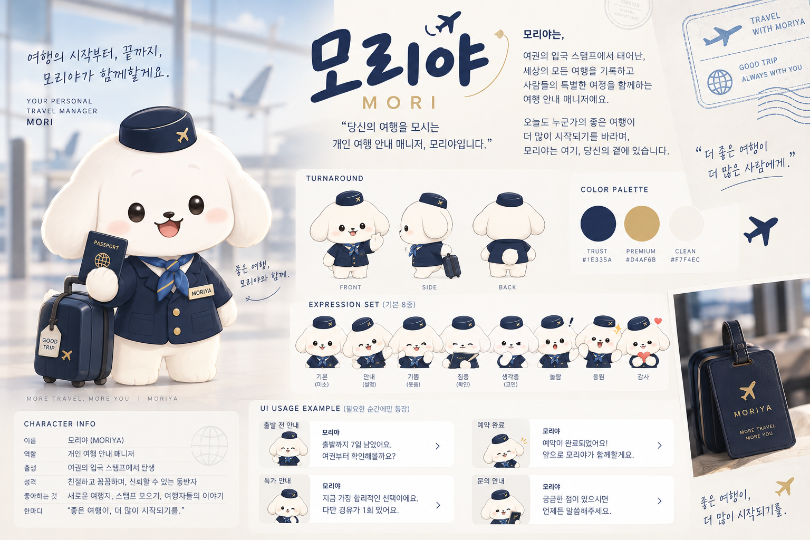
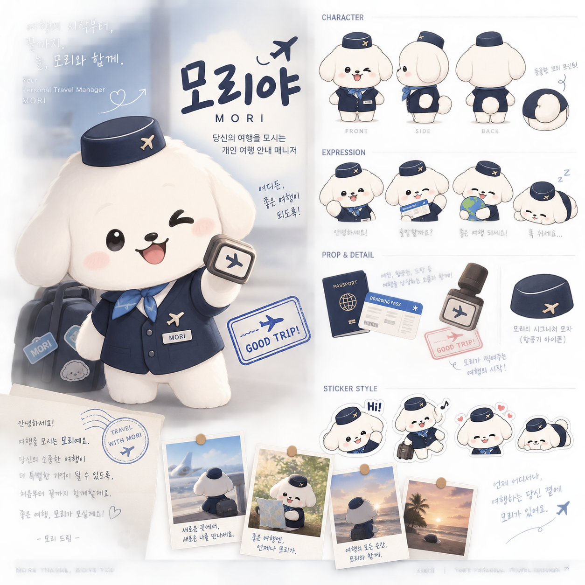

항공권 판매 여행사에서, 여행을 담당하는 여행사로
WPM은 항공권 판매를 중심으로 성장한 소규모 여행사로, 상품 다양성 및 플랫폼 규모 면에서 TRIP.com을 비롯한 대형 OTA 대비 열위에 있음. 상품 경쟁력 확대만으로는 자원 격차를 극복하기 어려운 구조이며, 이에 따라 예약 이후의 고객 경험을 재설계하는 방향으로 차별화 전략 수립이 필요한 시점임.
본 기획은 조건부 추진을 건의함. MVP 단계(메시지 운영 로직 중심)를 우선 검증한 뒤, 정량 지표를 근거로 후속 단계 확장 여부를 결정할 것을 제안함.
표 1. TRIP.com / 대형 OTA 대비 WPM 비교
| 구분 | TRIP.com / 대형 OTA | WPM |
|---|---|---|
| 상품 | 항공 · 호텔 · 투어 · 패키지 전 영역 | 항공권 중심 |
| 강점 | 가격 비교, 검색 편의성, 압도적 재고 | 빠른 의사결정, 유연한 서비스 설계 |
| 고객 관계 | 예약 시점까지의 거래 관계 | 예약 이후까지 이어지는 관계 설계 가능 |
| 조직 특성 | 여러 국가 · 팀에 분산된 대규모 조직 | 단일 브랜드 톤의 전사적 통제 가능 |
검색 → 비교 → 예약 → 결제로 이어지는 경쟁 구도에서는 상품 수, 가격 경쟁력, 마케팅 예산 등 자원 규모가 큰 경쟁사가 구조적으로 유리함. 동일한 방식의 확장 전략은 자원 열위에 있는 WPM에 불리하게 작용하므로, 경쟁의 기준 자체를 전환할 필요가 있음.
상품 다양성이 아닌, 예약 이후 고객 경험의 질로 경쟁축을 이동함.
예약하는 순간부터, 여행이 끝날 때까지 함께하는 여행사
"항공권을 판매하는 여행사" → "내 여행을 챙겨주는 여행사"
※ 명칭 및 세계관은 방향성 제안이며, 실제 적용 전 상표 · 저작권 검토가 필요함.
표 2. 예약 여정 단계별 메시지(안)
| 단계 | 트리거 | 메시지 예시 |
|---|---|---|
| 예약 | 예약 완료 | "예약 완료했어요. 이제 제가 챙겨드릴게요." |
| 결제 | 결제 완료 | "결제 확인했어요." |
| 발권 | 발권 완료 | "항공권 준비가 끝났어요." |
| 출발 준비 | D-7 | "여행이 일주일 앞으로 다가왔어요. 여권과 서류를 확인해볼까요?" |
| 출발 준비 | 체크인 오픈 | "온라인 체크인이 열렸어요." |
| 출발 준비 | D-1 | "이 항공편은 위탁수하물이 포함되어 있지 않아요." |
| 여행 중 | 환승 | "환승 시간이 1시간 10분이에요. 이동 동선을 미리 확인해두는 걸 추천해요." |
| 여행 중 | 지연 발생 | "항공편이 35분 지연됐어요. 환승 여유시간은 충분해요." |
| 여행 중 | 결항 발생 | "항공편이 결항됐어요. 지금 대체편을 확인하고 있어요." |
| 귀국 후 | 여행 종료 | "여행은 잘 다녀오셨어요?" |
정시 운항 안내보다 지연 · 결항 등 이상 상황 대응이 실질적 차별화 지점으로 판단됨. 대형 OTA는 이 순간 정형화된 자동 안내에 그치는 반면, WPM은 "확인하고 있다"는 메시지를 통해 실시간으로 챙기고 있다는 인상을 제공할 수 있음.
※ 여행 이력 기반 개인화는 개인정보 수집 · 이용 범위에 대한 법적 검토 및 고객 동의 절차가 선행되어야 하며, MVP 단계 범위에서는 제외함.
귀여운 캐릭터 + 전문적인 여행 서비스
표 3. 메시지 톤 가이드 예시
| 상황 | 지양 | 권장 |
|---|---|---|
| 출발 안내 | "안뇽~ 비행기 탈 시간이에요!! ✈️✈️" | "출발까지 7일 남았어요. 여권부터 확인해볼까요?" |
| 특가 안내 | "헐 실화? 이 항공편 완전 대박" | "지금 가장 합리적인 선택이에요. 다만 경유가 1회 있어요." |
광고형 콘텐츠보다 여행 정보를 재미있게 전달하는 정보형 콘텐츠를 우선함. (예: "비행기 타기 전 꼭 확인해야 하는 것", "항공권 예약할 때 자주 하는 실수", "여행 초보가 공항에서 당황하는 순간" 등)
표 4. IP 확장 단계(안)
| 단계 | 내용 |
|---|---|
| 1 | 웹사이트 — 예약 안내, 검색 · 결제 화면에 담당자로 등장 |
| 2 | 예약 여정 — 예약 상세, 출발 안내, 여행 준비 안내까지 확장 |
| 3 | SNS — 여행 정보 기반 숏폼 콘텐츠로 존재감 확보 |
| 4 | YouTube — 반응이 검증된 포맷을 영상 콘텐츠로 확장 |
| 5 | 굿즈 — 팬덤 형성 이후 소규모로 시작 |
| 6 | 브랜드 캠페인 — 캐릭터 중심 통합 캠페인 전개 |
| 7 | 협업(장기) — 인플루언서 · 연예인 협업, 브랜드 정착 이후 검토 |
※ 7단계(연예인 협업)는 현시점 실행 대상이 아닌, 브랜드가 자리잡은 이후의 장기 과제로 분류함. 초기 예산은 1~3단계에 집중함.
표 5. 실행 로드맵
| 구분 | 기간 | 내용 |
|---|---|---|
| Now | 0 – 2개월 | 캐릭터 역할 · 세계관 정립, 예약 상태 기반 메시지 4~5종 설계, 홈페이지 톤앤매너 정비 |
| Next | 3 – 6개월 | '마이 트립' 화면 오픈, 알림 자동 발송 로직 구축, SNS 콘텐츠 채널 시작 |
| Future | 6개월 이후 | 여행 이력 기반 개인화, 굿즈 · 브랜드 캠페인, 협업 검토 |
※ 체크포인트 — Now 단계 종료 시점(2개월 후), 메시지 오픈율 및 반복 CS 문의 감소가 확인되지 않을 경우 Next 단계로 이행하지 않음.
위 로직은 예약 시스템이 상태 변경(발권 완료, 체크인 오픈, 지연 · 결항 등) 이벤트를 외부로 전달할 수 있다는 가정 위에 있음. 실제 연동 가능 여부에 대한 기술 검증이 MVP 착수 전 선행되어야 함.
정량적 수치는 아직 확정되지 않았으며, MVP 운영 이후 실제 지표로 검증이 필요함.
본 기획은 긍정적 효과만을 전제하지 않으며, 실행 전 아래 9개 항목에 대한 검토를 완료함.
표 6. 리스크 및 대응방안
| No. | 이슈 | 원인 | 대응방안 |
|---|---|---|---|
| 1 | 이 서비스가 정말 필요한가 | 고객이 아닌 WPM이 먼저 느끼는 차별화 욕구일 수 있음 | 전 고객 대상이 아닌 '예약 후 확인이 필요한 고객'으로 범위를 좁히고, 알림은 선택적(옵트인)으로 설계 |
| 2 | 캐릭터가 장식으로 끝날 가능성 | 초기 개발이 비주얼에만 집중되기 쉬움 | MVP를 메시지 로직 중심으로 설계하고 비주얼은 최소 세트로 시작 |
| 3 | 대형 OTA가 동일 기능을 모방할 가능성 | 알림 · 메시지 기능 자체는 기술적으로 난이도가 낮음 | 대규모 조직은 담당자 서사를 전 브랜드에 일관 적용하기 어려움 — WPM 규모의 이점을 활용해 전사적으로 집중 |
| 4 | WPM 규모에서 구현 가능한가 | 개발 리소스가 제한적임 | 신규 시스템 대신 기존 예약 상태값과 알림 채널을 그대로 활용 |
| 5 | 알림 과다로 인한 고객 피로 | 모든 순간을 알리려는 과욕 | 필요 순간으로 빈도를 제한하고, 알림 on/off를 고객이 직접 설정하도록 함 |
| 6 | 브랜드가 저가로 인식될 가능성 | 캐릭터와 UI · 정보 품질의 관리 분리 실패 | 톤앤매너 가이드로 정보 정확성과 UI 완성도를 별도 관리 — 귀여움은 태도, 전문성은 내용 |
| 7 | 캐릭터 제작 · 유지 비용 | 모션 · 영상 · 다양한 표정을 초기부터 갖추려는 계획 | 정지 일러스트 5~8종으로 시작, 메시지 카피는 외주 대신 내부 CS 인력이 작성해 의존 비용 절감 |
| 8 | 개인정보 · 예약 데이터 활용 리스크 | 이력 데이터 활용 범위에 대한 사전 검토 부재 | MVP는 현재 예약 건 정보만 사용, 이력 기반 개인화는 별도 동의 · 법무 검토 후 2단계 도입 |
| 9 | 매출 · 고객 충성도로의 연결 여부 | 정성적 만족과 실제 재구매는 별개의 문제 | 초기에는 만족도 · 재방문 의향 등 정성 지표로 검증, 재예약 시 담당자 재등장 구조로 연결고리 설계 |
컨셉의 전략적 방향성은 타당하며 WPM의 조직 규모에 부합함. 다만 성패는 캐릭터의 완성도가 아니라 정확한 타이밍에 정확한 정보를 전달하는 운영 로직에 좌우됨. 굿즈 · 연예인 협업 등 IP 확장 후반 단계는 현시점의 판단 대상이 아니며, 초기 검증 이후의 선택지로 남겨둠.
캐릭터의 비주얼보다, 예약 상태값과 여행 일정을 기준으로 정확한 순간에 정확한 메시지를 전달하는 알림 운영 로직을 최우선으로 완성함.
MVP 운영 2개월 경과 시점에 메시지 오픈율 및 CS 문의 감소 지표를 근거로 Next 단계 확장 여부를 재검토함.


본 보고서의 세부 UX 목업(예약상세 화면, 캐릭터 대화 예시 등)은 아래 인터랙티브 프레젠테이션에서 확인 가능함.
https://string-parser.netlify.app/wpm-brand-strategy.html